Trygdeavgift er en fundamental del av det norske skatte- og avgiftssystemet som finansierer folketrygden og andre offentlige velferdsordninger. For bedrifter innebærer trygdeavgift både direkte kostnader gjennom arbeidsgiveravgift og administrative forpliktelser knyttet til ansattes trygdeavgift. Systemet påvirker lønnskostnader, kontantstrøm og skattemessige forhold på en måte som krever grundig forståelse for korrekt regnskapsføring og compliance.
Seksjon 1: Grunnleggende om Trygdeavgift
1.1 Definisjon og Formål
Trygdeavgift er en obligatorisk avgift som betales av alle som har pensjonsgivende inntekt i Norge. Avgiften finansierer folketrygdens ytelser, inkludert pensjon, sykepenger, uføretrygd og andre sosiale ytelser.
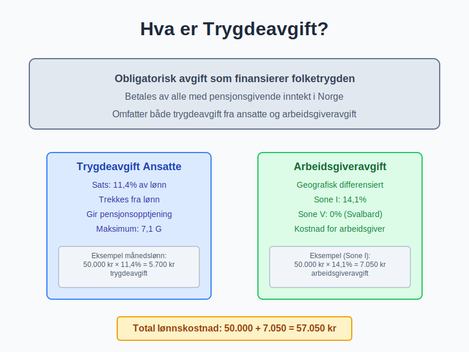
To hovedkomponenter:
- Trygdeavgift fra den ansatte: Trekkes direkte fra lønn
- Arbeidsgiveravgift: Betales av arbeidsgiver som tillegg til lønnskostnaden
1.2 Juridisk Grunnlag
Trygdeavgiften er regulert i folketrygdloven og skatteloven, og administreres av:
- NAV: Beregning av trygdeytelser
- Skatteetaten: Innkreving og kontroll
- Finansdepartementet: Satsbestemmelser og regelutvikling
Hovedprinsipper:
| Prinsipp | Beskrivelse | Praktisk konsekvens |
|---|---|---|
| Universalitet | Alle med pensjonsgivende inntekt | Bred avgiftsbase |
| Proporsjonalitet | Avgift etter inntektsnivå | Progressiv struktur |
| Øremerking | Finansierer spesifikke formål | Direkte kobling til ytelser |
Seksjon 2: Trygdeavgift for Ansatte
2.1 Beregningsgrunnlag og Satser
Trygdeavgift beregnes av den ansattes pensjonsgivende inntekt med følgende satser for 2024:
Trygdeavgift-satser:
| Inntektsgruppe | Sats | Grunnlag |
|---|---|---|
| Lønnsinntekt | 11,4% | Brutto lønn |
| Pensjonsinntekt | 5,1% | Brutto pensjon |
| Næringsinntekt | 11,4% | Overskudd fra næring |
| Kapitalinntekt | 0% | Fritatt for trygdeavgift |
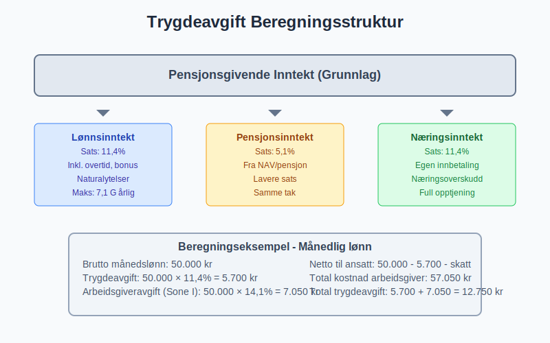
2.2 Praktisk Beregning og Eksempler
Månedslønn eksempel:
Brutto månedslønn: 50.000 kr
Trygdeavgift: 50.000 × 11,4% = 5.700 kr
[Tabelltrekk](/blogs/regnskap/hva-er-tabelltrekk "Hva er Tabelltrekk? Komplett Guide til Skattetrekk og Trekkberegning") (skatt): 50.000 × 25% = 12.500 kr
Netto utbetaling: 50.000 - 5.700 - 12.500 = 31.800 kr
Spesielle situasjoner:
- Overtidsbetaling: Samme sats som ordinær lønn
- Bonus og tillegg: Inkluderes i beregningsgrunnlaget
- Naturalytelser: Verdsettes til markedsverdi
2.3 Maksimalbeløp og Frigrenser
Trygdeavgift har et tak basert på hvor mye som gir pensjonsopptjening:
2024-satser:
- Øvre grense: 7,1 G (grunnbeløpet i folketrygden)
- G = 118.620 kr (2024)
- Maksimal pensjonsgivende inntekt: 842.804 kr
- Maksimal årlig trygdeavgift: 96.080 kr
Beregning over taket:
Årslønn: 1.000.000 kr
Pensjonsgivende del: 842.804 kr
Trygdeavgift: 842.804 × 11,4% = 96.080 kr
Ikke 1.000.000 × 11,4% = 114.000 kr
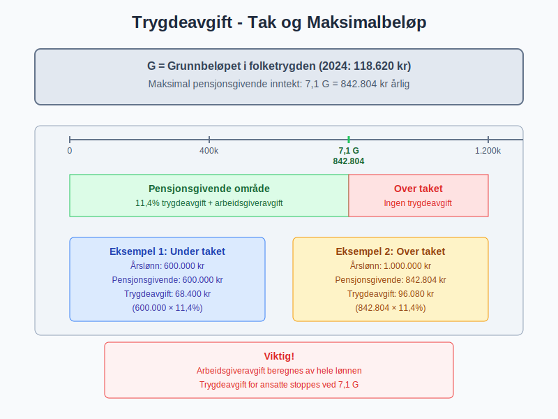
Seksjon 3: Arbeidsgiveravgift
3.1 Geografiske Soner og Satser
Arbeidsgiveravgift varierer etter geografisk plassering for å stimulere næringsvirksomhet i distriktene:
Satsstruktur 2024:
| Sone | Sats | Geografisk område | Eksempel kommuner |
|---|---|---|---|
| Sone I | 14,1% | Øst-Norge hovedområder | Oslo, Bergen, Stavanger |
| Sone Ia | 10,6% | Nærområder til Sone I | Ski, Drammen |
| Sone II | 10,6% | Midt-Norge | Trondheim, Molde |
| Sone III | 6,4% | Nord-Norge områder | Tromsø, Bodø |
| Sone IV | 5,1% | Spesielle distrikter | Alta, Hammerfest |
| Sone V | 0% | Svalbard | Longyearbyen |
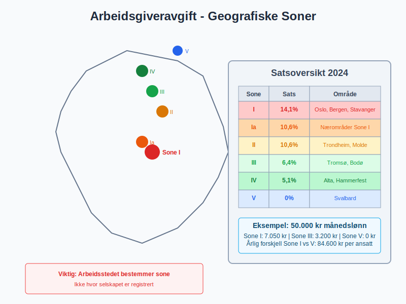
3.2 Beregningsgrunnlag for Arbeidsgiveravgift
Arbeidsgiveravgift beregnes av samme grunnlag som ansattes trygdeavgift:
Inkluderte elementer:
- Grunnlønn og faste tillegg
- Overtidsbetaling og variable tillegg
- Bonus og provisjoner
- Naturalytelser (firmabil, telefon, etc.)
- Pensjonskostnader (over 2 G)
Eksluderte elementer:
- Refusjon av utlegg (dokumenterte kostnader)
- Arbeidsklær og verktøy
- Kost under tjenestereiser
- Dekning av sykepenger fra NAV
3.3 Praktiske Beregningseksempler
Total lønnskostnad for arbeidsgiver (Sone I):
Brutto månedslønn: 50.000 kr
Arbeidsgiveravgift: 50.000 × 14,1% = 7.050 kr
Obligatorisk tjenestepensjon: 50.000 × 2% = 1.000 kr
Total kostnad for arbeidsgiver: 58.050 kr
Utbetaling til ansatt:
Brutto lønn: 50.000 kr
- Trygdeavgift: 5.700 kr
- Skatt: 12.500 kr
- Pensjon (egen andel): 500 kr
= Netto utbetaling: 31.300 kr
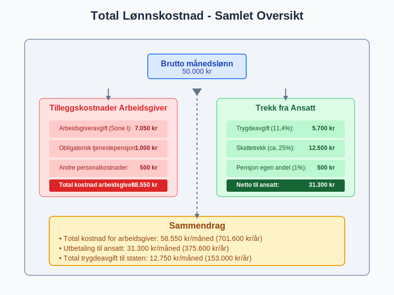
Seksjon 4: Regnskapsføring av Trygdeavgift
4.1 Kontering og Bokføring
Trygdeavgift behandles forskjellig for arbeidsgiver og ansatt:
For ansattes trygdeavgift:
Ved lønnsutbetaling:
Debet: Lønnskostnad 50.000 kr
Kredit: Skyldige lønn til ansatte 31.300 kr
Kredit: Skyldig forskuddstrekk 12.500 kr
Kredit: Skyldig trygdeavgift 5.700 kr
Kredit: Skyldig pensjon 500 kr
For arbeidsgiveravgift:
Ved lønnsberegning:
Debet: Lønnskostnad (arbeidsgiveravgift) 7.050 kr
Kredit: Skyldig arbeidsgiveravgift 7.050 kr
4.2 Periodisering og Timing
Trygdeavgift periodiseres etter opptjeningsprinsippet:
Månedlig rutine:
- Beregning: Trygdeavgift på månedens lønn
- Bokføring: Kostnadsføring og skyldig avgift
- Innbetaling: Innen 15. i påfølgende måned
- Rapportering: A-melding til Skatteetaten
Årlig avstemming:
- Kontroll av total innbetalt trygdeavgift
- Avstemming mot årsoppgaven
- Korreksjon av eventuelle avvik
- Skattemelding med trygdeavgift-opplysninger
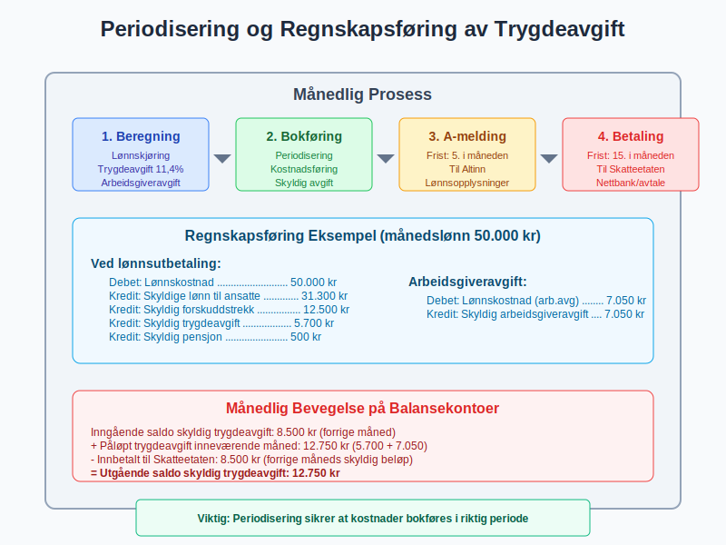
4.3 Balanseposter og Gjeld
Skyldige avgifter vises i balansen som kortsiktig gjeld:
Kontooversikt:
| Konto | Type | Balanseklassifisering |
|---|---|---|
| 2740 | Skyldig trygdeavgift ansatte | Kortsiktig gjeld |
| 2750 | Skyldig arbeidsgiveravgift | Kortsiktig gjeld |
| 2770 | Skyldig forskuddstrekk | Kortsiktig gjeld |
Månedlig bevegelse:
Inngående saldo skyldig trygdeavgift: 8.500 kr
+ Påløpt trygdeavgift inneværende måned: 12.750 kr
- Innbetalt til Skatteetaten: 8.500 kr
= Utgående saldo skyldig trygdeavgift: 12.750 kr
Seksjon 5: Spesielle Situasjoner og Unntak
5.1 Ulike Inntektstyper
Trygdeavgift behandles forskjellig avhengig av inntektstype:
Lønnsinntekt:
- Standard sats: 11,4%
- Arbeidsgiveravgift: Etter geografisk sone
- Pensjonsopptjening: Ja, inntil 7,1 G
Pensjonsinntekt:
- Redusert sats: 5,1%
- Ingen arbeidsgiveravgift: Utbetales av NAV/pensjonsleverandør
- Begrenset pensjonsopptjening: Kun tjenestepensjon
Næringsinntekt:
- Standard sats: 11,4%
- Egen innbetaling: Selvstendig næringsdrivende
- Full pensjonsopptjening: Som lønnsinntekt
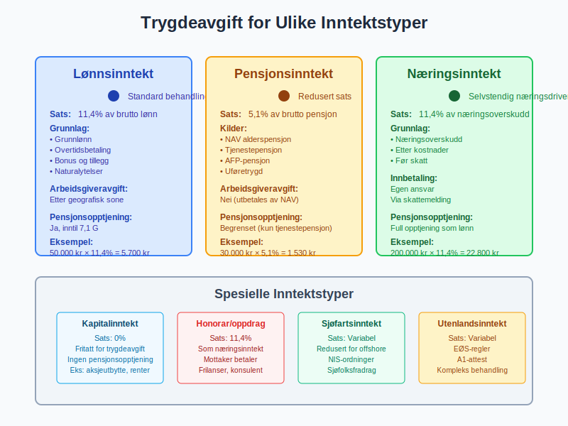
5.2 Internasjonale Forhold
Grenseoverskridende ansettelser kompliserer trygdeavgift-beregningen:
EØS-regler:
- Hjemstatsregel: Trygdeavgift betales i arbeidsland
- Utsendingsregler: 24 måneder i annet EØS-land
- A1-attest: Dokumenterer hvilket land som skal ha trygdeavgift
Praktiske konsekvenser:
Norsk arbeidstaker i Sverige (12 måneder):
- Norsk arbeidsgiver betaler svensk socialavgift
- Ingen norsk arbeidsgiveravgift
- Svensk A1-attest kreves
- Administrativ kompleksitet øker
5.3 Særordninger og Fritak
Spesielle grupper har egne regler:
Sjøfolk:
- Redusert trygdeavgift for arbeid på kontinentalsokkelen
- Sjøfolksfradrag reduserer grunnlaget
- Særlige geografiske unntak
Diplomater og internasjonale organisasjoner:
- Fullstendig fritak for diplomatisk personale
- Delvis fritak for lokalt ansatte
- Spesielle rapporteringsrutiner
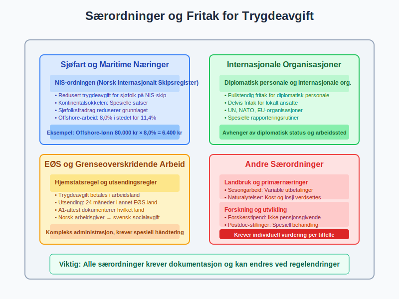
Seksjon 6: Digital Rapportering og Compliance
6.1 A-ordningen og Digital Innrapportering
A-ordningen har forenklet rapportering av trygdeavgift:
Månedlig A-melding inneholder:
- Lønnsopplysninger per ansatt
- Beregnet trygdeavgift og arbeidsgiveravgift
- Forskuddstrekk og andre trekk
- Naturalytelser og andre tillegg
Digital prosess:
- Lønnskjøring i lønns- og personalsystem
- Generering av A-melding fil
- Innsending via Altinn eller system-til-system
- Betalingsordrer genereres automatisk
- Innbetaling via nettbank eller avtale
6.2 Kvalitetssikring og Kontroll
Systemer for å sikre korrekt rapportering:
Automatiske kontroller:
- Konsistenssjekk mellom lønn og avgifter
- Sammenligningslogikk mot tidligere perioder
- Valideringsregler for A-melding format
- Avviksrapportering ved uventede endringer
Månedlige rutiner:
- Kontroller at alle ansatte er inkludert
- Verifiser beregning av trygdeavgift og arbeidsgiveravgift
- Avstem mot lønnsjournal og kontoer
- Send A-melding innen fristen (5. i måneden etter)
- Betal avgifter innen fristen (15. i måneden etter)
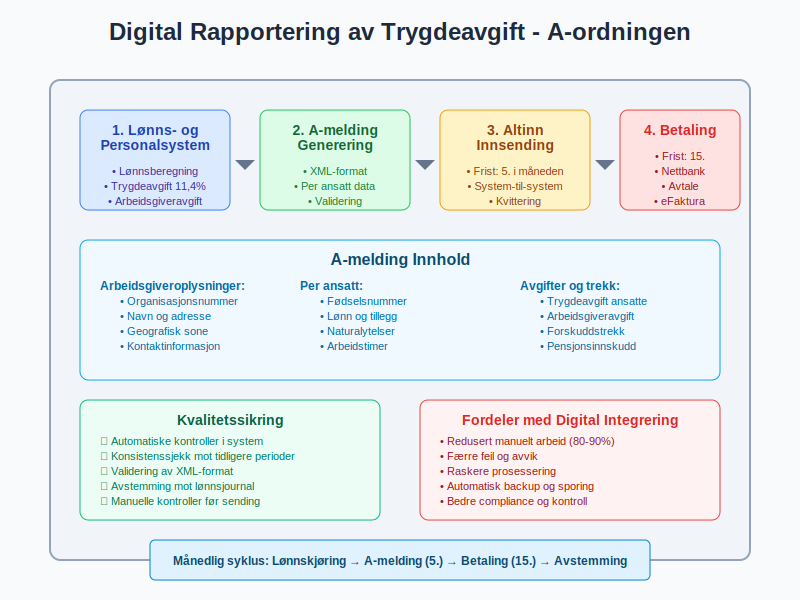
6.3 Revisjoner og Etterlevelse
Skatteetaten kontrollerer trygdeavgift gjennom:
Kontrollaktiviteter:
- Dataanalyser av A-meldinger
- Krysssjekk mot andre datakilder
- Registersammenlikninger (Folkeregisteret, Enhetsregisteret)
- Stedlige revisjoner ved mistanke om feil
Vanlige feilkilder:
| Feiltype | Konsekvens | Forebyggende tiltak |
|---|---|---|
| Feil sone-klassifisering | Feil arbeidsgiveravgift | Verifiser bedriftens geografiske tilhørighet |
| Manglende naturalytelser | For lav avgiftsberegning | Systematisk registrering av alle ytelser |
| Feil pensjonsbehandling | Avvik i grunnlag | Korrekt skille mellom ulike pensjonsordninger |
Seksjon 7: Trygdeavgift og Pensjonssystemet
7.1 Sammenhengen med Pensjonsopptjening
Trygdeavgift gir direkte pensjonsopptjening i folketrygden:
Opptjeningsmekanisme:
- 1:1 forhold: Hver krone trygdeavgift gir pensjonsopptjening
- Maksimal opptjening: 7,1 G per år
- Minimum opptjening: Ingen terskel for opptjening
Pensjonsberegning:
Årlig pensjonsopptjening = Min(Pensjonsgivende inntekt, 7,1G)
Hvor G = grunnbeløpet (118.620 kr i 2024)
Eksempel:
Årslønn: 600.000 kr
Pensjonsopptjening: 600.000 kr (under taket)
Trygdeavgift: 600.000 × 11,4% = 68.400 kr
7.2 Koordinering med Tjenestepensjon
Obligatorisk tjenestepensjon koordineres med folketrygd:
Samspillseffekter:
- Trygdeavgift finansierer grunnpensjon
- Tjenestepensjon bygger på toppen
- Samlet pensjonsnivå beregnes koordinert
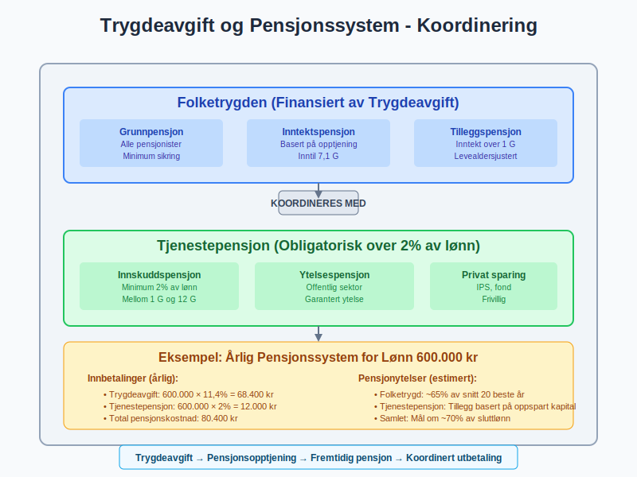
7.3 Utfordringer ved Pensjonsreform
Ny pensjonsordning (fra 2011) endret sammenhengen:
Hovedendringer:
- Levealdersjustering: Pensjon justeres for økt levealder
- Fleksibel uttak: Pensjon kan tas ut fra 62 år
- Opptjening til 75 år: Utvidet opptjeningsperiode
Konsekvenser for trygdeavgift:
- Utvidet avgiftsplikt: Trygdeavgift til 75 år
- Økt kompleksitet: Flere parametre påvirker samlet pensjon
- Behov for rådgivning: Ansatte trenger mer informasjon
Seksjon 8: Trygdeavgift i Ulike Bransjer
8.1 Shipping og Maritime Næringer
Sjøfartsnæringen har særlige ordninger:
Norsk Internasjonalt Skipsregister (NIS):
- Redusert trygdeavgift for sjøfolk på NIS-skip
- Geografiske unntak for arbeid på kontinentalsokkelen
- Spesielle satser for offshore-virksomhet
Praktisk behandling:
Lønn offshore-arbeider:
Vanlig trygdeavgift: 11,4%
Reduksjon offshore: -3,4%
Effektiv sats: 8,0%
Månedlig beregning:
Offshore-lønn: 80.000 kr
Trygdeavgift: 80.000 × 8,0% = 6.400 kr
8.2 Landbruk og Primærnæringer
Landbruksnæringen har tilpassede ordninger:
Særlige forhold:
- Sesongarbeid: Variable lønnsutbetalinger
- Naturalytelser: Kost og losji verdsettes
- Utenlandsk arbeidskraft: Komplekse avgiftsregler
Regnskapsmessige utfordringer:
- Periodisering av sesonglønn
- Verdsettelse av naturalytelser
- Koordinering med landbruksrelaterte subsidier
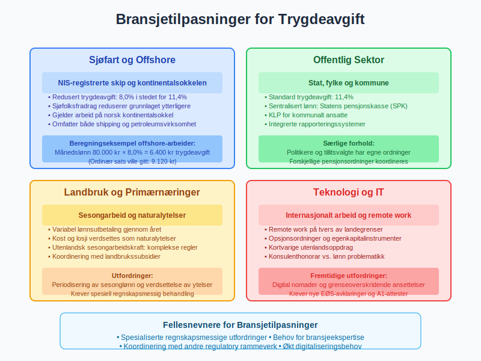
8.3 Offentlig Sektor
Offentlige arbeidsgivere har egne rutiner:
Statsforvaltning:
- Sentral lønnsbehandling: Statens pensjonskasse
- Automatisk rapportering: Integrerte systemer
- Særlige pensjonsordninger: Koordinering med folketrygd
Kommunal sektor:
- KLP-ordninger: Kommunal landspensjonskasse
- Lokale systemer: Varierende digitalisering
- Politikere og tillitsvalgte: Spesielle regler
Seksjon 9: Fremtidige Endringer og Trender
9.1 Demografiske Utfordringer
Befolkningsutvikling påvirker trygdeavgift-systemet:
Hovedutfordringer:
- Aldring av befolkningen: Flere pensjonister per yrkesaktiv
- Lavere fødselstall: Mindre arbeidsstyrke
- Økt levealder: Lengre pensjonsperioder
Mulige tilpasninger:
- Høyere trygdeavgift: Økte satser for å finansiere systemet
- Økt pensjonsalder: Senere uttaksalder
- Endrede ytelser: Reduserte pensjoner relativt til lønn
9.2 Digitalisering og Automatisering
Teknologisk utvikling endrer administrasjonen:
Fremtidige løsninger:
- AI-basert kontroll: Automatisk avviksdeteksjon
- Sanntidsrapportering: Kontinuerlig dataoverføring
- Blockchain-registre: Manipulasjonssikre systemer
Konsekvenser for bedrifter:
- Redusert administrativt arbeid: Automatisering av rutiner
- Økt transparens: Myndighetene får bedre innsyn
- Nye kompetansekrav: Behov for digital kompetanse
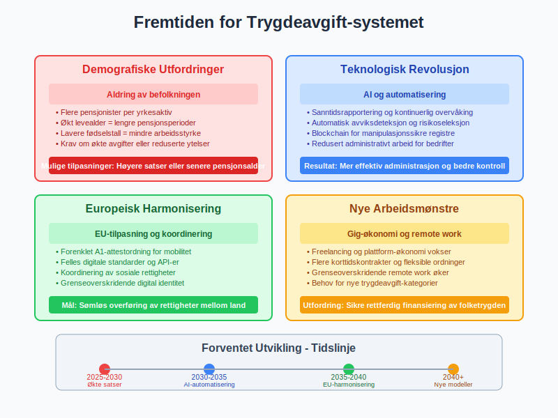
9.3 Europeisk Harmonisering
EU-tilpasning kan påvirke norsk system:
Pågående utvikling:
- A1-attestordningen: Forenklet mobilitet
- Digitaliseringsdirektiver: Felles standarder
- Sosial søyle: Koordinering av sosiale rettigheter
Potensielle endringer:
- Harmoniserte satser: Felles minimum-nivåer
- Digital identitet: Grenseoverskridende systemer
- Portabilitet: Lettere overføring av rettigheter
Seksjon 10: Praktiske Verktøy og Ressurser
10.1 Beregningsverktøy
Digitale kalkulatorer for trygdeavgift:
Tilgjengelige verktøy:
| Verktøy | Funksjon | Tilgang |
|---|---|---|
| Skatteetaten kalkulator | Grunnleggende beregning | Gratis online |
| NAV pensjonskalkulator | Pensjonsopptjening | nav.no |
| Lønnsystem-moduler | Integrert beregning | Kommersielle systemer |
Egenutviklede Excel-modeller:
Trygdeavgift beregning:
=MIN(Lønn; 7.1*G) * 11.4%
Arbeidsgiveravgift:
=Lønn * OPPSLAG(Sone; Satstabell)
10.2 Compliance-sjekklister
Månedlige kontrollpunkter:
A-ordningen:
- Alle ansatte inkludert i lønnskjøring
- Korrekte trygdeavgift-satser anvendt
- Naturalytelser verdsatt og inkludert
- A-melding sendt innen frist (5.)
- Avgifter betalt innen frist (15.)
Kvartalsvise kontroller:
- Avstemming mot skattetrekk-konto
- Kontroll av sone-klassifisering
- Gjennomgang av nye ansatte og fraträdelser
- Oppdatering av satser ved endringer
10.3 Feilretting og Korrigeringer
Håndtering av oppdagede feil:
Korrigeringsprosess:
- Identifisering: Avdekking av feil i beregning
- Kvantifisering: Beregning av avvik
- Korreksjon: Endring i neste A-melding
- Oppgjør: Tilbakebetaling eller etterbetaling
Vanlige korrigeringsårsaker:
- Feil geografisk sone: Endret forretningsadresse
- Manglende naturalytelser: Glemt firmabil eller telefon
- Pensjonsgrunnlag-feil: Feil behandling av ulike pensjonsordninger
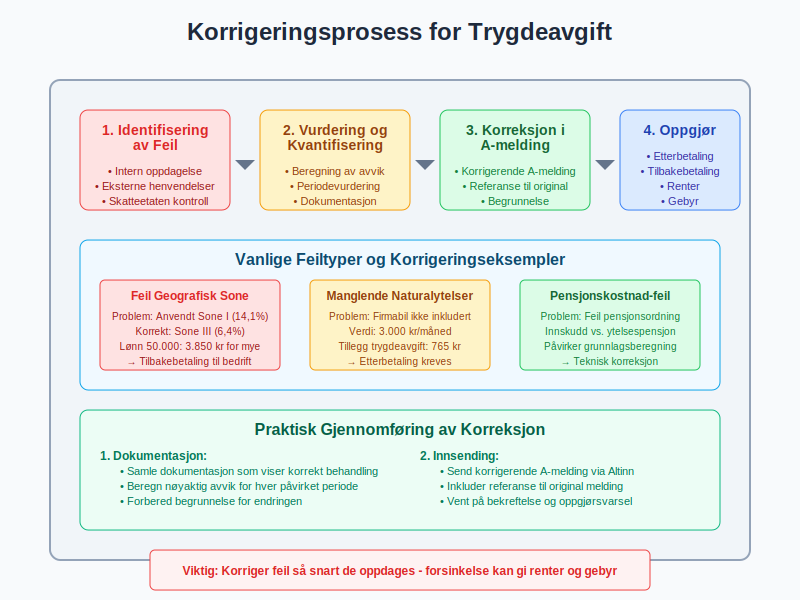
Seksjon 11: Økonomiske Konsekvenser og Planlegging
11.1 Kontantstrøm-påvirkning
Trygdeavgift påvirker bedriftens likviditet:
Månedlig kontantstrøm:
Eksempel bedrift med 10 ansatte:
Gjennomsnittlig månedslønn: 45.000 kr
Total lønnskostnad: 450.000 kr
Utgifter måned 1:
- Netto lønnsutbetaling: 310.000 kr
- Forskuddstrekk til innbetaling: 112.500 kr
- Trygdeavgift til innbetaling: 51.300 kr
- Arbeidsgiveravgift til innbetaling: 63.450 kr
Total månedlig utgang: 537.250 kr
Timing:
Lønnsutbetaling: 12. i måneden
Avgiftsinnbetaling: 15. i påfølgende måned
11.2 Budgettering og Prognose
Planlegging av trygdeavgift-kostnader:
Årlig budsjett-elementer:
- Lønnsutvikling: Forventede lønnsøkninger
- Bemanningsendringer: Nye ansettelser og fratredelser
- Satsendringer: Regjeringens budsjett-vedtak
- Geografiske endringer: Flytting av virksomhet
Sensitivitetsanalyse:
Påvirkning av 1% lønnsøkning:
Ekstra trygdeavgift ansatte: +1% av lønnssum
Ekstra arbeidsgiveravgift: +1% av lønnssum × sone-sats
Samlet kostnadsgøkning: ca. 1,14% av total lønnskostnad
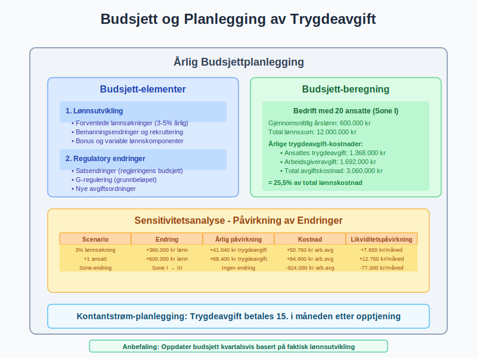
11.3 Optimalisering og Effektivisering
Strategier for å minimere administrative kostnader:
Automatisering:
- Integrerte systemer: Lønn, regnskap og rapportering
- API-koblinger: Direkte overføring til Altinn
- Overvåkingssystemer: Automatiske avviksvarslinger
Organisatoriske tiltak:
- Sentralisering: Felles lønnsbehandling for flere enheter
- Outsourcing: Ekstern lønns- og personaladministrasjon
- Kompetansebygging: Opplæring av nøkkelpersonell
Konklusjon
Trygdeavgift er en fundamental del av det norske velferdssystemet som skaper både forpliktelser og rettigheter for arbeidsgivere og arbeidstakere. Systemet kombinerer finansiering av viktige samfunnsfunksjoner med komplekse administrative krav som krever nøyaktig håndtering og kontinuerlig oppfølging.
Nøkkelinnsikter:
- Dobbel belastning: Både ansatte og arbeidsgivere bidrar til finansieringen
- Geografisk differensiering: Arbeidsgiveravgift varierer betydelig mellom landsdeler
- Teknologisk utvikling: Digitalisering forenkler rapportering men krever nye kompetanser
- Demografiske utfordringer: Befolkningsutvikling påvirker systemets bærekraft
Praktisk betydning:
For regnskapsførere og økonomisk ansvarlige innebærer trygdeavgift:
- Månedlige rutiner: Korrekt beregning og rettidig innbetaling
- Kompetansekrav: Forståelse av komplekse regler og unntak
- Systemkrav: Moderne verktøy for effektiv administrasjon
- Risikobevissthet: Konsekvenser av feil kan være betydelige
Fremtidsperspektiv:
Trygdeavgift-systemet vil fortsette å utvikle seg som respons på demografiske endringer, teknologisk utvikling og europeisk harmonisering. Bedrifter som investerer i moderne administrasjonssystemer og bygger solid kompetanse innen personaladministrasjon vil være best posisjonert for fremtidige krav.
Strategisk tilnærming:
Effektiv håndtering av trygdeavgift krever en helhetlig tilnærming som integrerer:
- Regnskapsmessig presisjon i alle beregninger og posteringer
- Compliance-fokus med proaktiv overholdelse av frister og krav
- Teknologisk modernisering for å redusere manuelle prosesser
- Kompetanseutvikling for å møte fremtidige utfordringer
Ved å behandle trygdeavgift som en integrert del av den overordnede personalledelsen kan bedrifter sikre både regelverksetterlevelse og operasjonell effektivitet i en av de mest regulerte områdene av norsk virksomhetsdrift.